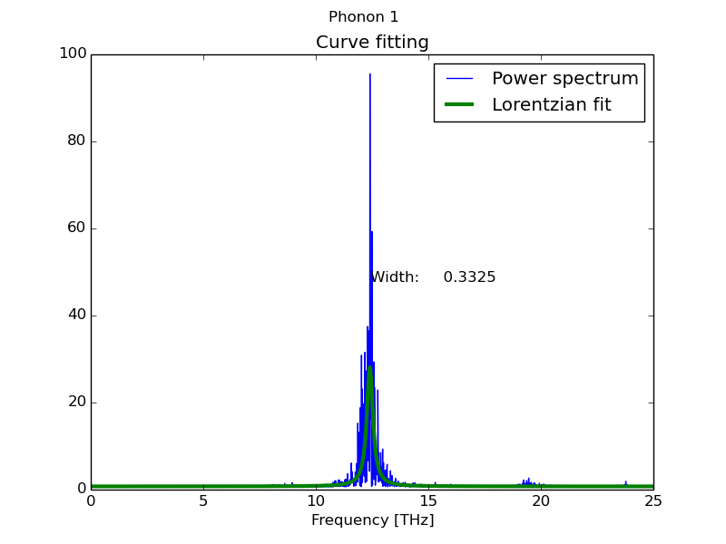
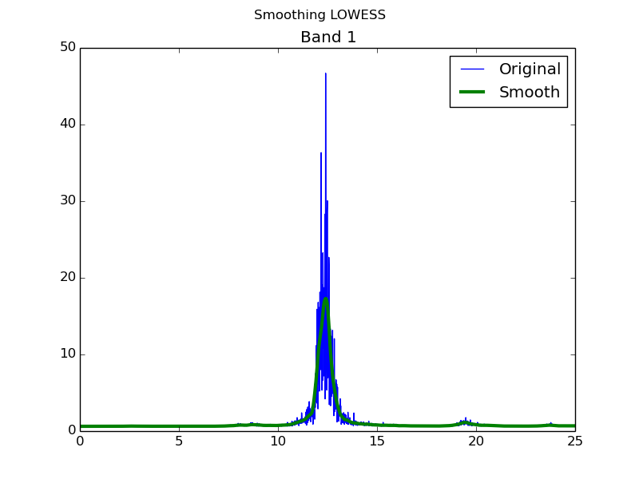
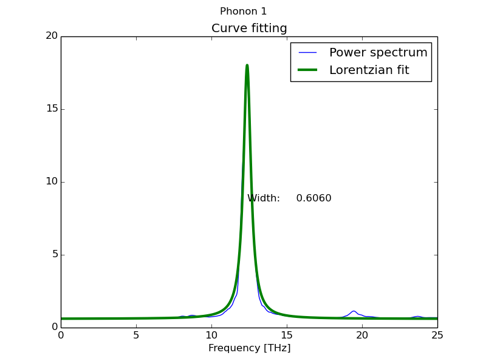

Big data
In order to obtain well converged results in the calculation of anharmonic phonon properties, specially in phonon linewidths,
usually it becomes necessary to use very long MD simulations. This requires long calculation times and imply to hadle very large
files. Fortunatelly, in canonical ensemble calculations the velocity time correlation usually decreases fast with the time. That means that
it becomes possible to join several independent MD trajectories to obtain a larger one with almost negligible added error. That allows to
calculate many independent MD simulations at the same time and join them later to obtain a larger MD trajectory and increase the accuracy of
the results.
To support this task DynaPhoPy can save the MD information into a hdf5 file to be read afterwards. Additionally I provide an independent
script called concath5 which allows join several hdf5 files into one.
Note: VASP code has to be compiled with advanced features in order to start MD from a random seed and generate different trajectories each run. Please, refere to VASP documentation
for further information.
Save data into hdf5 file
Saving data into hdf5 file can be usefull in order to save space in the hard drive. Since only the necessary information for dynaphopy is stored, this hdf5 file size can be around 5 times smaller than the original MD TRAJECTORY file. Besides it allows to manipulate this information as an intermediate step using concath5 or other third party software. To request to save MD trajectory into hdf5 file use -sv flag follower by the file name.
This option can be used alone or together with other flags but, in any case, all time steps in TRAJECTORY file will be stored in the hdf5 file (-n flag has no effect in the number of time steps stored).$ dynaphopy input_file TRAJECTORY -sv filename.h5Load data into hdf5 file
Once saved into a hdf5 file, MD data can be load to dynaphopy using -lv flag. Loading data from hdf5 is much faster than using TRAJECTORY file, if several calculation using the same data have to be done, it is highly recomended to use this option. than using TRAJECTORY file, if several calculation using the same data have to be done, it is highly recomended to use this option.
Notice that when loading data this way, TRAJECTORY must not not be set.$ dynaphopy input_file -lv filename.h5Manipulating data
The structure of the hdf5 file is quite simple. With a minimum knowledge of programming it can be easly manipulated by third parties software. In dynaphopy script directory a simple script for joining data is provided named concath5. It can be used as example for more complex ones. To use this script just call it followed by the name of all the hdf5 files to be joined and the last one the name of the new hdf5 file that will contain all the joined data.
$ concath5 source1.h5 source2.h5 source3.h5 ··· joined.h5By default concath5 skips the first 20000 time steps of each source MD trajectory. This is done to ensure that the MD is totally converged in each file. Using -f flag, is possible to define the number of time steps to be skipped.
$ concath5 source1.h5 source2.h5 ··· joined.h5Depending on the processed MD simulation the size of the resulting hdf5 file could be huge. In the lastest version, by default concath5 stores all the velocity as well as the trajectory coordinates at each timestep. To calculate the phonon related properties using DynPhoPy only the velocity is needed. So if no atomic displacement calculation is needed option
--velocity_only can be used. This option makes concath5 script to not store the trajectory in the final hdf5 file saving HD space.$ concath5 --velocity_only source1.h5 source2.h5 ··· joined.h5Working with wave-vector projected velocity (Saving RAM memory)
The amount of physical RAM memory available may strongly limit the size of the trajectory that DyanPhopy can read. Specially for LAMMPS trajectories, whose output files can weight a few tens of Gb for long MD simulations, the memory can become easily full. This is usually no due to the trajectory size itself but the process of it that DynaPhoPy does.
To overcome this problem the trajectory can be read by pieces, projected into a wave vector, stored in the disk (hdf5 files), joined and read with DynaPhoPy again to calculate the power spectrum and the phonon properties.
Due to the dimensionality of the projected velocity is much lower than the original trajectory the, MD length that can be used is much longer. However, since the velocity is already projected, it only can be used to analyze the phonons in the projected wave vector. That means that for each wave vector to be analyzed this procedure has to be repeated.
Read data in pieces
There are to flags to control the piece of data that DynaPhoPy will read. --read_from and --read_to. Each flag accept only one integer number each and define the interval of data to be read from the output file.$ dynaphopy input_file OUT.lammpstrj --read_from 10000 --read_to 20000This reads the trajectory in OUT.lammpstrj file from the 10000th until 20000th time step.
To store the wave vector projected velocity into a file the -svc flag is used.$ dynaphopy input_file OUT.lammpstrj -svc projected_velocity.h5Combining these three flags we can divide a long MD trajectory into smaller wave projected velocity files. These files can be joint using the concath5 script in the save way shown before.
$ concath5 proj_vel1.h5 proj_vel2.h5 ··· proj_vel_joined.h5In this case -f flag should not be since those files are part of the same trajectory and we want the files to match exactly.
Once joined, the combined proj_vel_joined.h5 file can be read by DynaPhoPy using -lv flag.$ dynaphopy input_file -lv projected_velocity.h5
It has to be pointed that when reading proj_vel_joined.h5 file the wave vector must not to be set. Wave vector is already stored in proj_vel_joined.h5 file. Defining another wave vector using -q flag will make DynaPhoPy to stop. Keep in mind that the number of features available reading from a projected velocity file are limited to power spectrum calculations and peak analysisMapping RAM memory on disk (Saving RAM memory in exchange of storage space)
Alterativelly to divide the MD data into small pieces DynaPhoPy allows to map most part of the RAM memory on disk. This option allow us to work normally with dynaphopy without any pre processing of the data. To activate memory mapping use --memmap. This option requieres to define explicitily the amount of data to be loaded by options --read_from and --read_to
$ dynaphopy input_file TRAJECTORY --read_to 100000 --memmapMemory will be mapped in up to 4 files stored by default in the working directory. These files will be removed once the execution is finished (if DynaPhoPy crashed these files may not be removed). Environment variable DYNAPHOPY_TEMPDIR can be set to define an alternative location for these temporal files.
export DYNAPHOPY_TEMPDIR=/scratchWhen working with LAMMPS MD trajectories, this procedure can be done more efficently reading the atomic velocities directly from LAMMPS output file instead to calculate them from the atomic positions (check prepare MD section for more information about how to generate a LAMMPS output). This reduces the amount of RAM memmory to be used during the calculation and therefore the amount of storage space when using --memmap option.
Warning: Using memory mapping will decrease the performance of the calculation and the i/o disk access will be intensive. It is recommended to use a local SSD disk for this purpose.
MEM coeficient analysis
The correct setting of the number of coefficents in MEM algorithm to calculate the power spectrum is one of the crucial point to take in account.
Depending on the number of coefficents the peak width of the peaks may significantly change, which directly affects the phonon linewidths results.
From my experience, if the MD simulations are long enough, as the number of coefficents increase the peak width become to stabilize while keeping the peaks shape smooth. Is to be expected than this stabilized width is more reliable even if the peaks become a little more uglyer.
In order to check the evolution of the power spectra peaks width with the number of coefficents dynaphopy provides option -csa
which performs a scan for all peaks anf fits each one to Lorentzian function to extract width information.
All this information is plotted in 3 matplotlib windows for each phonon.
$ dynaphopy input_file TRAJECTORY -csa
Additionally, it shows the optimum number of coeficients that has the best fit with a Lorentzian function and estimates the peak width value taking a average for all coefficents ponderated by the inverse of fit error.
Peak # 5
------------------------------------
Estimated width(FWHM): 0.0570242354113 THz
Position: 3.8546680966 THz
Optimum coefficients num: 336.0
Fitting Error: 2.31991499922e-07
External power spectra analysis
The calculation of the power spectra, specially using Fourier transform method, can take a lot of time (maybe few days). For this reason the
calculation of these spectra may be done in a cluster computer in which may not have acces through graphical interface. This makes the fitting
analysis difficult since there is no way to evaluate visually if the fitting has been correctly done. Besides, the power spectrum obtained may
be noisy and a post processing may be needed to improve the fitting quality.
In dynaphopy package, fitdata script is included in scripts folder to extract the anharmonic information from a power
spectrum file obtained with Dynaphopy throught -sw or -sp options. This allows to first calculate the
power spectrum using Dynaphopy in a cluster computer, saving it in a file and later extract the information in a local machine.
Additionally this script allows to smooth the spectrum using Local regression method before fitting it with a Lorentzian function.
During the execution it shows the smoothing result and the fitting result for each spectrum present in the spectrum file allowing to test
different smoothing parameters to obtain the best results.
Simple execution
By default the script takes all the spectra present in the file and fits them to a Lorentzian function (equivalent to Dynaphopy peak analysis).
$ fitdata fileSmoothing spectra using local regression method
This method works very well removing the noise in very noisy spectra. This allows to obtain much better results in the fitting and, in many cases, it becomes indispensable in order to get a meaningful result. To do this, the visual analysis becomes crucial to compare the original noisy spectrum and the smoothed one to make sure that the essetial peak shape is kept. To request the smooth methos use -sm flag.
 $ fitdata -sm fileChanging smoothing parameters
In case that the smoothing process is not succesfull, it can be ajusted via smoothing span parameter -f (Default: 0.2). Increasing its value will make the strectra smoother but may differ more from the original spectrum.
$ fitdata -sm -f 0.4 fileCombining spectra
In high symmetry points in the reciprocal space (wave vector), it may happen that two or more phonon are degenerated. In that case the projection into this wave vector and, consecutively, the power spectra should present the same properties (Width and position). In order to increase the fitting precision these equivalent spectra can be conbined into one reducing the random error. This can be done using -bi flag. Following this flag it is nedeed to introduce a string containing the number of the spectra to be combined (equivalent spectra) separated by spaces and the non equivalent spectra separated by comma like in the following example:
$ fitdata -bi "1 2, 3 4 5" filein this example, the script will fit two phonon power spectra. The first one using the avarage of the spectra 1 and 2. The second one using the average of spectra 3, 4 and 5.
Thermal expansion contribution
Thermal expansion may have a huge contribution to the frequency shift at high temperatures. This contribution can be included in DynaPhoPy via force constants. These force constants are obtained from a lattice dynamics calculation using a unit cell correspoponding to the cell volume at a given temperature. This temperature should correspond to the temperature at which the MD simulation is calculated. The crystal symmetry of the unit cell is assumed to remain constant with the volume. If the crystal symmetry of the structure at the analyzed temperature is different respect the symmetry of the structure at 0 K temperature this approximation may be incorrect.
In order to calculate the thermal expansion contribution the quasi-harmonic approximation (QHA) may be used. DynaPhoPy package includes a script to facilitate this calculation using phonopy: qha_extract.
To use this script, first it is necessary to prepare a set of phonon calculations at different volumes as described in phonopy-qha manual. Using this procedure we should obtain 3 kinds of files:
1) A FORCE_CONSTANTS file at each volume.
2) A thermal_properties.yaml file at each volume
3) A e-v.dat file.
The qha_extract is executed by:
$ qha_extract input_file -ev e-v.dat
-fc FORCE_CONSTANTS_1 FORCE_CONSTANTS_2 FORCE_CONSTANTS_3 ...
-tp thermal_properties_1.yaml thermal_properties_2.yaml ...
-t 800
where input_file is a usual DynaPhoPy input file (the same used to analyze the MD is OK) and -t flag indicates the temperature at which the force constants are obtained. This temperature should be the one at which the MD simulation is calculated. The output result of this script is a file named FORCE_CONSTANTS_QHA that contains the force constants at the given temperature.
The order in which the files are introduced using -fc and -tp flags matters, make sure to be consistent each other. Wildcards can be used, just make sure the filenames is properly set according to alphanumeric order:
$ qha_extract input_file -ev e-v.dat
-fc FORCE_CONSTANTS_*
-tp thermal_properties_*
-t 800
Optional flags:
-p Plot results of the QHA calculation using phonopy-qha
-sfc Defines custom name for the ouput FORCE_CONSTANTS_QHA file.
Once the calculation is finished, the file FORCE_CONSTANTS_QHA is used in DynaPhoPy by the flag --qha_force_constants:
$ dynaphopy input_file TRAJECTORY
--qha_force_constants FORCE_CONSTANTS_QHA